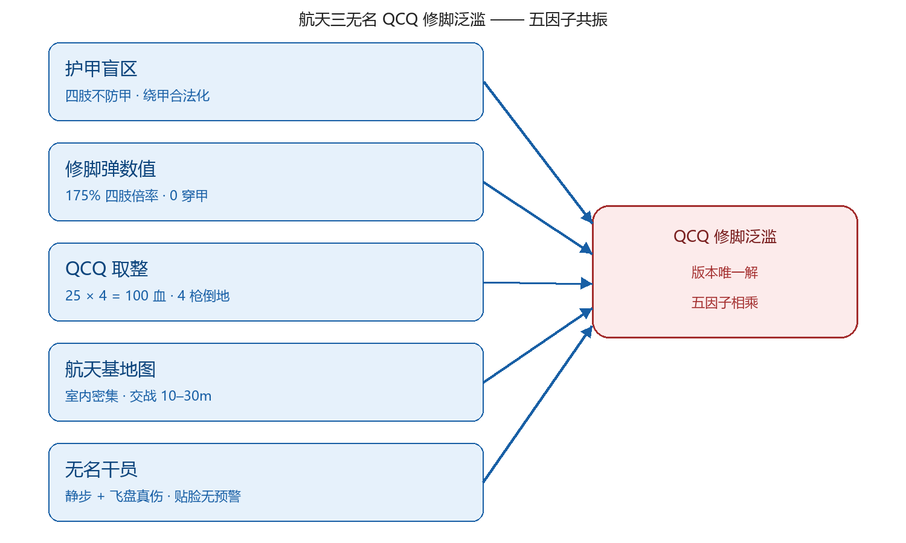
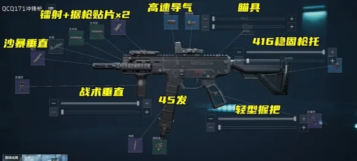
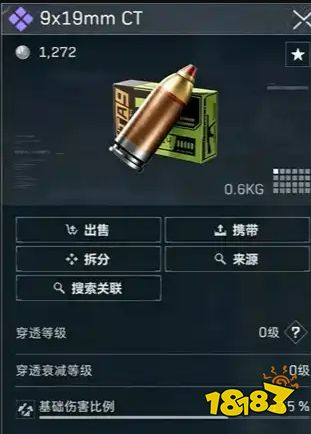
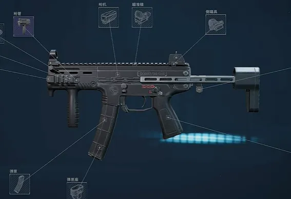

航天三无名 QCQ 修脚泛滥的乘性崩坏启示
三无名的压迫感或许没有白龙黑狼红皮露娜的护航来得强，但S10赛季的航天从三工程泛滥到现在的人均修脚枪，甚至于出现双枪AW+QCQ171的组合，一度让满改QCQ的价格来到100W。这一切不得不让我们重视起新修脚弹给本赛季游戏环境带来的冲击力——站在策划角度，QCQ和三无名为什么彻底改变了游戏环境？而为了整体的平衡和其他流派玩家的游戏体验，又该如何避免其过于超标的地位？以下将从五点分开来讲。
一、成因：不是某个东西超模，是多因素乘性崩坏撞在一起
五个导致三无名修脚的因素，单看每一项都站得住——
①护甲有覆盖盲区是搜打撤的基础机制；②修脚弹的设计专门给四肢加伤害为玩家提供了以小博大的博弈空间；③QCQ171在S10赛季之前本来是相对使用率较低的枪，与其相比VECTOR和FS-12挤占了更多生态位，理应获得增强；④航天基地室内拐角密集，而全装五套队又相比其他图更为多，以小博大收益高；⑤无名干员定位潜行贴脸，飞盘的高肉伤和双闪光弹的战略能力。
但它们是乘的关系，不是加的关系。

图 1 ：5 项各自合理的设计相乘
1. 护甲盲区。护甲只盖躯干和头部，手脚露在外面。这条规则给绕甲留了一条合法通道——对方的头甲等级再高也无所谓，能中打手/腿就行。
2. 修脚弹数值。4 级肉体特化弹四肢伤害加成 175%、0 穿甲、护甲衰减 60%。本意是让低甲玩家用便宜枪反杀 5/6 套，但即使站在玩家角度来看，也觉得175的倍率给得太狠。
3. QCQ 取整。单发 25 点，打腿 4 发正好 100 血，0.21 秒倒地。只要改成 24 点一发就得 5 枪，0.26 秒，强度立刻掉一档。杀伤子弹数恰好取整让QCQ 的TTK甚至超过了巨浪这样的T0近战枪械。
4. 航天基地地图。堵闸/蹲总裁等玩法利用了室内楼道窄、转角多的优势，将交战距离控制在 10–30 米，正好是修脚弹的舒适区，把修脚弹的射程红利全部利用起来。
5. 无名干员。静步消音 + 飞盘真伤 +闪光优势。干员机制本身就是为贴脸没人发现设计的。修脚弹要打中腿，前提是离得近——无名的机制把“寻找近距离交战”的优势条件变得无限容易做到。
少了任何一项都只是局部问题，但五项叠在一起就成版本答案了。

图 2 QCQ171 改装示例，专属配件单个价格甚至超过10W

图 3 9×19mm CT 肉体特化弹：4 级紫色，2133哈夫币/发，0.6kg
二、和三工程泛滥比，策划该怎么修正
三工程和三无名分别在S9/10改变游戏环境的成因在我看来可以放在一起类比：策划想扶持某个玩法，结果在乘性叠加下失控了。其中三工程指队伍内包括四个游戏中的工程位和回响/鸟人等可以通过控场技能叠加，让对手进不去也退不出来的“这里是地狱吗”的效果，在很大程度上来源于液氮回响等新干员机制数值对其他干员的碾压加上本身工程位在总裁等狭小区域的极大控场优势。而修脚流是同样是数值 + 枪 + 地图 + 干员等多因素叠加，最后变成打四枪腿就能拿下刘涛AW的版本答案。
但是两者发力点不一样：
| 对比项 | 三工程泛滥 | 航天三无名修脚泛滥 |
| 泛滥根源 | 干员技能机制叠加 | 数值取整 × 地图 × 干员共振 |
| 破坏的东西 | 玩家打不过也逃不掉的体验 | 高价值装备的保护作用 |
| 玩家烦躁点 | 看不到反打空间 | 本想猛攻，装备碾压却被 4 枪脚阴死 |
| 可能的修正方法 | 限制同定位干员叠加/削弱干员数值（已热补丁） | 调数值倍率 / 杀伤子弹数（数值）/提高修脚装备价值 |
S7 的盾盾奶、S8 的乌疾疾被一刀砍废，Steam 好评率从 78% 掉到 52%，被社区骂用脚做平衡。这样的“阴间”社区玩法是有前车之鉴的，而这次修脚流，官方的限制也是多方面的：四级修脚弹不能放进保险箱、强装罚换弹、加开镜散布、降后坐。这些限制触发条件，也在一定程度上修复了猛攻玩家的游戏体验（博弈体验更好/修脚弹全在保险箱外）。
但是目前来看仍然有超标风险，新修脚弹核心的175% 倍率、4 发致死这两个数字没破。可能的优化方法可以把修脚流 TTK 拉回 0.26 秒左右（也就是 5 枪倒地），一发需要的子弹可以让玩家的博弈空间拉大许多。
三、策划加这颗 4 级修脚弹，意欲何为
合理的动机我能想到几条：
给喜欢以小博大玩家/不愿意携带过高价值物资的玩家一种新的玩法。6 套金弹是战力天花板，然而不可能把把猛攻，要让大多数玩家玩得动，必须有代价低、上限高的玩法。修脚本身就是为这个设计的，而四级修脚弹则进一步强化。
补充克制链。穿甲弹克甲 → 修脚弹同样克甲但怕中远距离 → 中远距离克修脚。进一步削弱猛攻的生存空间。
制造赛季话题。每个新赛季都需要一个版本答案在 B 站刷屏，传播热度本身就是 KPI。
可以看出这些意图都在一定程度达到了，但问题在执行层。175% 倍率 + 4 枪取整，这个数字大概率是确保新弹够强故意给高，或者策划故意想制造一个“超标怪”。不管哪种，结果都是一个本来要丰富生态的设计，落地变成了生态失衡。
从中可以学到什么？设计和数值之间，应该有一道乘性验证（边际？）的关卡。单看每个元素都合理，但乘在一起之后能不能玩，要做一遍组合验证。三工程和三无名这次的超标，就是精准踩中了这一点。
四、关键数字一览
| 项 | 数值 / 描述 |
| 9×19mm CT 肉体特化弹 | 4 级紫色 · 2133哈夫币/发 · 0.6kg/发 |
| 四肢伤害倍率 | +175% |
| 穿透等级 | 0 级（完全不穿甲） |
| 护甲衰减 | 打躯干部位伤害衰减 60% |
| QCQ171 + CT 弹（单腿） | 25 伤 × 4 发 = 100 血 · 4 枪倒地 |
| TTK | 0.21 秒（而ASVAL 金弹打 6 套为 0.24 秒）这合理吗？？？ |
| 修脚弹限制 | 不能存保险箱 · （体验服）取出后静置 6 秒 · 强装罚换弹 5 秒 · 开镜散布增加 · 后坐降低 |
| 适配枪械 | 9mm 全系（QCQ171、维克托 9mm、MP5、G18 等） |
五、QCQ171 整体观感
把这把枪单独拎出来看：9×19mm 口径，裸枪 13–15 万哈夫币，性价比好过于 26 万的维克托。装上 Q171 新式高射速化枪机之后，射速直接起飞，配合 4 级修脚弹，0.21 秒 4 枪打完 100 血。满改后后坐、操控、据枪三项拉满，枪身轻量化，滑铲和贴脸拉扯机动性极强。
短板同样明显：打上身刮痧；远距离修脚伤害衰减严重；基础腰射扩散差，堆腰射需要高额配件成本。

图 4 QCQ171 整体外观与配件框
六、可复用的几条结论
克制链设计：修脚的乐趣根基是低甲玩家有以小博大的通道，但是否能以小博大要靠博弈技巧（优势地形，组团埋伏等），不能仅仅靠这样一颗无脑强弹。
取整坑：数值策划里，'单发伤害 × 击杀子弹数 = 总伤害恰好等于目标血量'这种取整会显著放大强度，要单独做敏感性测试，这真是我们想要的吗？
新内容上线：扶持弱势枪、修复不同流派的平衡是必然做法，但新内容上线时要多角度去进行乘性验证：单元素合理不一定代表组合合理。
机制叠加：干员机制叠加会指数级破坏体验；同定位干员组队（三个比特、三个乌鲁鲁）要在匹配或阵容上限上做限制（如工程削弱补丁第一修就是三比特的蜘蛛受伤加上限）。
修正姿态：限制触发条件 + 精准调数值 + 保留流派，相比直接削弱数值，既更能维护社区信任，又可以维护其带来的多元玩法。